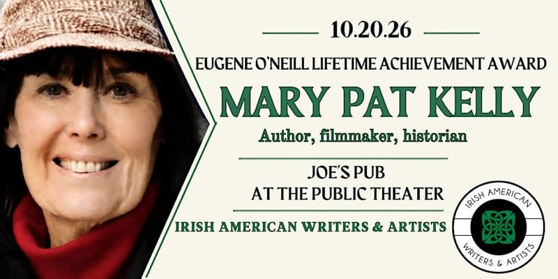
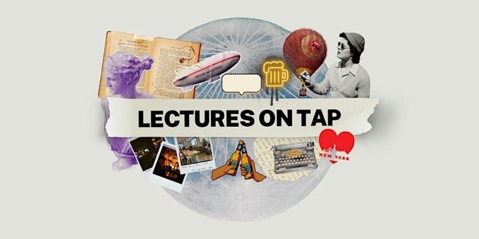
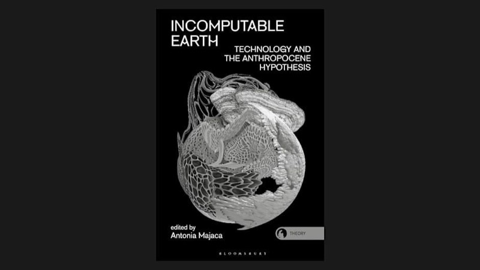
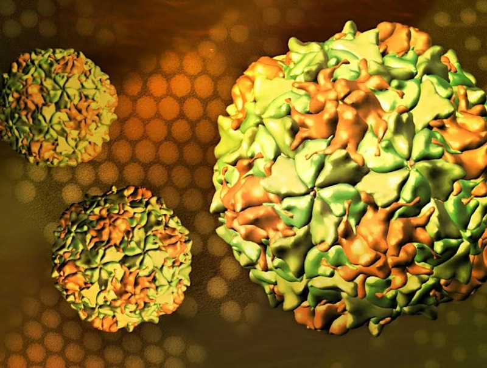
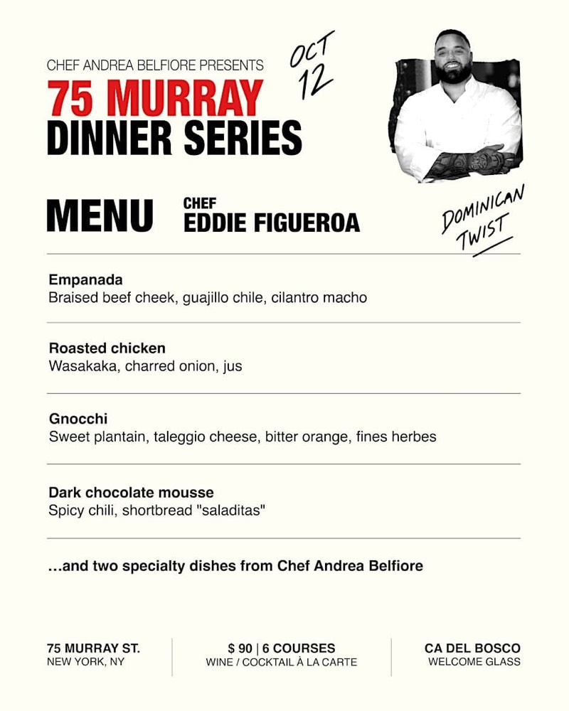

Music
Music6:30 PM · Greenwich Village
Juana Molina @ Le Poisson Rouge
Argentine songwriter Juana Molina plays live at Le Poisson Rouge.
Tickets
Picked from 544 events today. Tell us what you like and it gets sharper.
MusicArgentine songwriter Juana Molina plays live at Le Poisson Rouge.
Layli Long Soldier's new book 'We' with Natalie Diaz in conversation.
 Music
MusicGrammy-winning Vince Giordano leads his 11-piece 1920s jazz band.
 Film
FilmWajda's Samson, part of the Andrzej Wajda 100 retrospective.
 Theater
TheaterSarah Kane's Crave staged by OBIE-winning Hoi Polloi, runs to Oct 24.
Grammy-winning Allison Russell on her Hour of Chaos tour.
Billy Crystal's solo Broadway show, a rare limited engagement.
 Comedy
ComedyJessica Kirson headlines; known for viral character videos.
 Film
FilmKen Russell's controversial 1971 The Devils on the IFC screen.

Meetups & MixersMary Pat Kelly receives the 2026 Eugene O'Neill lifetime achievement award.
Bo Petersen's acclaimed one-woman show on life under apartheid, one night.

Meetups & MixersExperts explain billiards' mathematics in a bar setting, with a lecture format.

TechBook launch for Incomputable Earth with Tega Brain and Gary Zhexi Zhang.

TechHistorian David Oshinsky discusses polio vaccine history with Perri Klass.

Food & DrinkChef Andrea Belfiore teams with NYC chefs for cuisine-focused dinners.